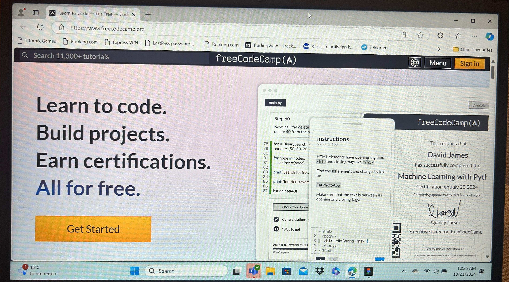

Microsoft Learn

Platform: Microsoft Learn
Why it's important: This is the official learning platform from Microsoft, making it one of the most trusted and reliable sources for learning IT skills. It covers everything from basic IT concepts to advanced topics like cloud computing, Azure, and C# programming. You can follow structured learning paths, which makes it perfect for beginners and intermediate learners.
Key features: Free, interactive, with hands-on labs and certifications.
Coursera

Platform: Coursera
Why it's important: Coursera offers courses from top universities and companies...
Key features: University-quality education, free auditing, and certificates available.
W3Schools

Platform: W3Schools
Why it's important: W3Schools is perfect for beginners who want to learn web development and basic programming...
Key features: Beginner-friendly, interactive coding practice.
FreeCodeCamp

Platform: FreeCodeCamp
Why it's important: FreeCodeCamp is a completely free platform focused on learning web development...
Key features: Project-based learning, large community for support.